Creating Spatial Annotations
creating-spatial-annotations.Rmd
# load required packages
library(SPATA2)
library(tidyverse)
# load SPATA2 inbuilt example data
object_t313 <- loadExampleObject("UKF313T", process = TRUE, meta = TRUE)
object_t275 <- loadExampleObject("UKF275T", process = TRUE, meta = TRUE)1. Spatial Annotations in general
Spatial Annotations represent annotations for spatial data. The concept allows users to define and store polygons that outline areas of interest within images or datasets. The outlines, in turn, can be used as spatial references to visualize feature expression as a function of distance to areas that are potential biological forces. Generally speaking, a spatial annotation simplay require a polygon. SPATA2 implements three concepts of Spatial Annotations: (Spatial) Image Annotations, (Spatial) Group Annotations and (Spatial) Numeric Annotations.
2. Image Annotations
This section uses the sample UKF313T as an example.
# plot image on the left
plotImage(object_t313)
# uses the results of computeMetaFeatures(), count distribution is heavily right skewed -> transform
plotSurface(object_t313, color_by = "n_counts_gene", transform_with = log10) +
labs(color = "counts\n(log10)")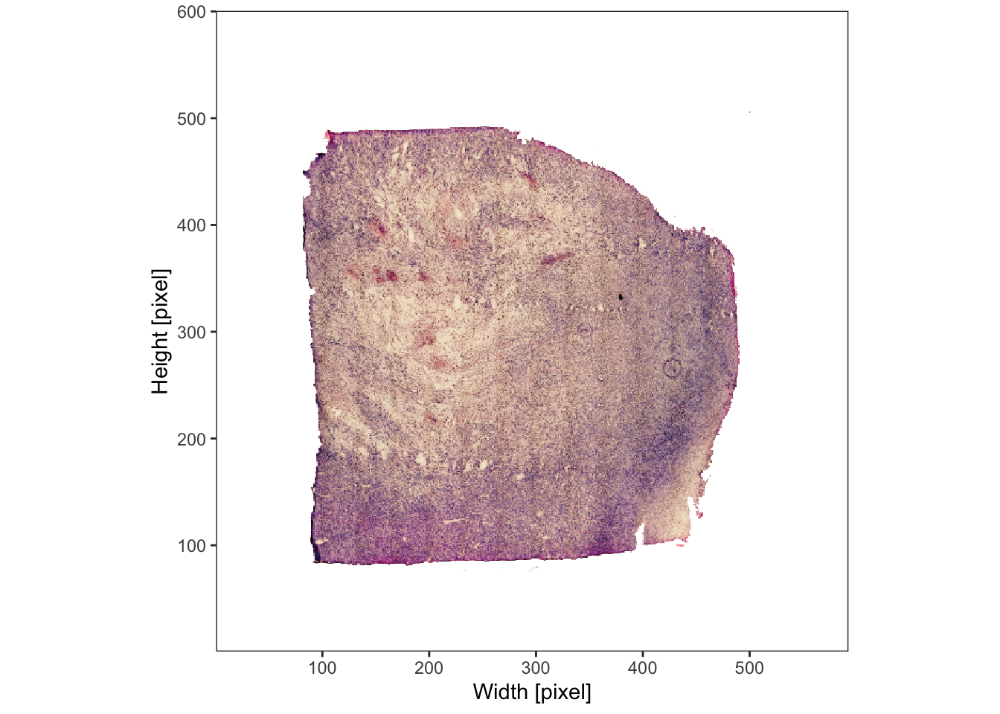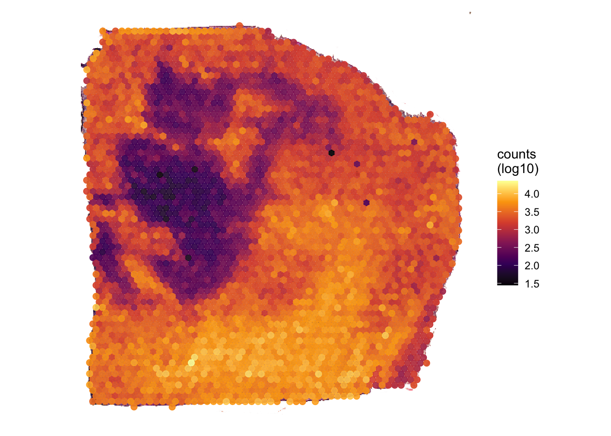
Image annotations are represented by the S4 class
ImageAnnotation, which is designed to capture spatial
annotations by outlining areas of interest on images. It provides a
flexible framework for creating annotations that visually highlight
specific regions within images, such as histological structures,
cellular patterns, or other histo-morphological features in images. It
can be interactively created with the
createImageAnnotations() function. This function lets you
access an interactive application in which you can encircle the
structure or area you want to annotate.
# access an interface to interact with the image
object_t313 <- createImageAnnotations(object_t313)
This GIF exemplifies the process of creating an image annotation.
The left plot Interaction is where the magic happens. The
right plot is used for orientation if you want to zoom in and out.
Double click on the left image to start the drawing process. Double
click again to stop drawing. If you are using drawing mode
Single click on ‘Highlight’ to highlight the encircled area,
enter the tags you want to tag the annotation with, enter the ID with
which you want to name the annotation and click on ‘Add Image
Annotation’. If you are in drawing mode Multiple stopping the
drawing immediately highlights the encircled area. This allows to
quickly encircle multiple structures of the same kind that are tagged
with the same tags (e.g. multiple small vessel). The tab on the right
called ‘Added Image Annotations’ allows to visualize all image
annotations saved so far. Make sure to click on ‘Close application’ to
return the SPATA2 object containing the results.
# results are stored in the processed object that can be downloaded
plotSpatialAnnotations(
object = object_t313,
ids = c("necrotic_area", "necrotic_edge", "necrotic_edge2"),
nrow = 1,
unit = "px",
fill = ggplot2::alpha("orange", 0.25)
)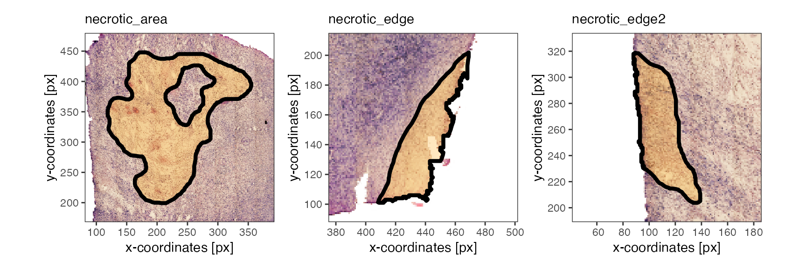
Note that the image annotations necrotic_edge
necrotic_edge2 have been postprocessed with
mergeWithTissueOutline() to prevent any transgression of
the tissue edge.
3. Numeric Annotations
Numeric annotations are designed to represent the spatial extent of
data points, such as cells or barcoded spots, by filtering and outlining
them according to their values for a specific numeric variable. This is
particularly suitable for creating annotations that highlight areas of
interest based on continuous characteristics like gene expression or
other numeric attributes derived from spatial multi-omic datasets.
SPATA2 allows to annotate space based on numeric variables automatically
using createNumericAnnotations(). For more details on how
to manipulate the way the areas are annotated, please refer to the
documentation via createNumericAnnotations.
# left plot
plotImage(object_t275)
# right plot
plotSurface(object_t275, color_by = "HM_HYPOXIA", pt_clrsp = "plasma") 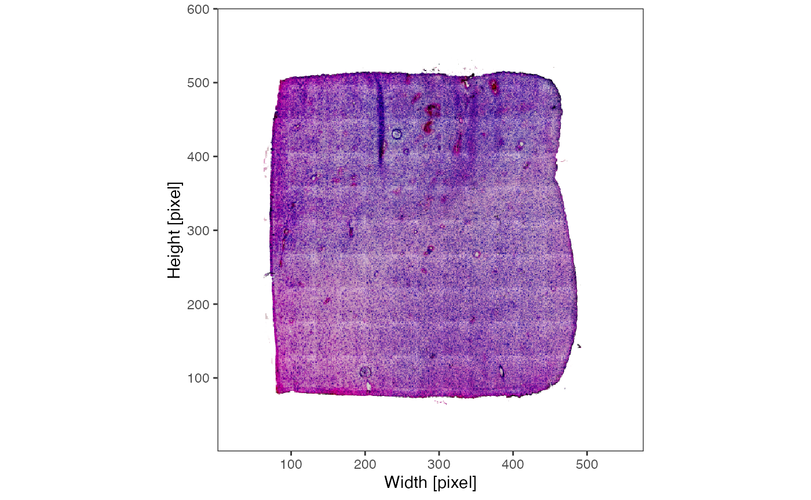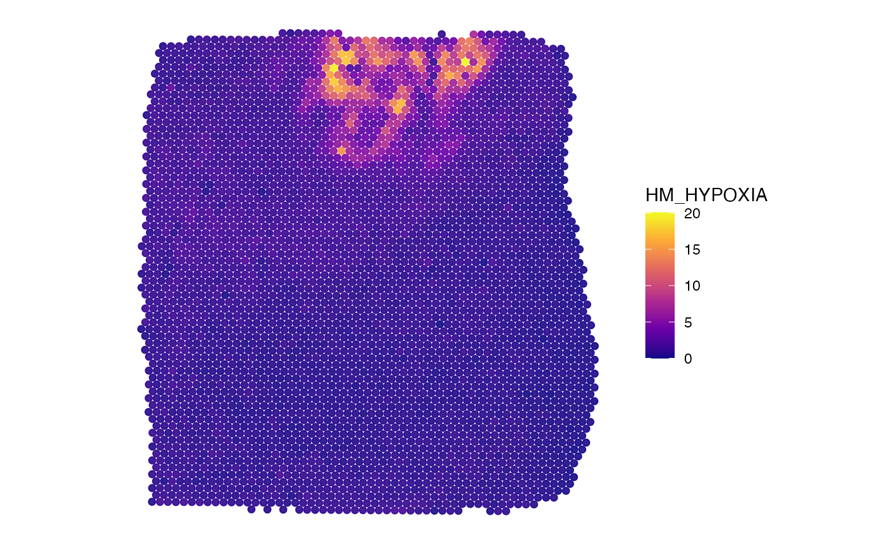
object_t275 <-
createNumericAnnotations(
object = object_t275,
variable = "HM_HYPOXIA",
threshold = "kmeans_high",
inner_borders = TRUE, # default, allows "holes" inside the annotation
id = "hypoxic_ann",
force1 = TRUE
)
# all spatial annotation IDs
getSpatAnnIds(object_t275)## [1] "vessel1" "vessel2" "vessel3" "img_ann_1" "hypoxic_ann"
# subset with their class
getSpatAnnIds(object_t275, class = "Numeric")## [1] "hypoxic_ann"
# plot the outline
hypoxic_ann_outline <-
ggpLayerSpatAnnOutline(object_t275, ids = "hypoxic_ann")
# left plot
plotImage(object_t275) +
hypoxic_ann_outline
# right plot
plotSurface(object_t275, color_by = "HM_HYPOXIA", pt_clrsp = "plasma") +
hypoxic_ann_outline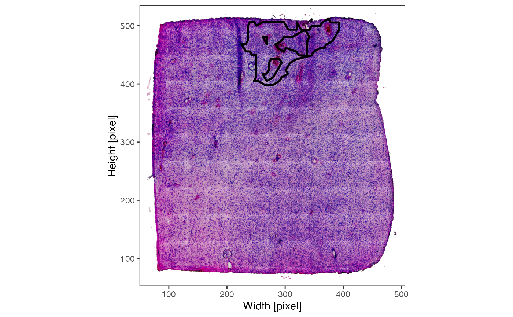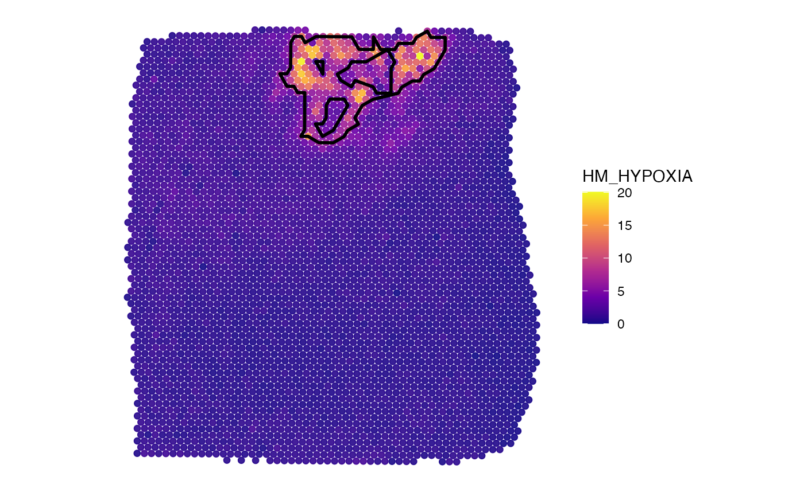
Note the difference between inner_borders = TRUE and
inner_borders = FALSE.
object_t275 <-
createNumericAnnotations(
object = object_t275,
variable = "HM_HYPOXIA",
threshold = "kmeans_high",
inner_borders = FALSE, # no holes, only one outer outline
id = "hypoxic_ann_nh",
force1 = TRUE
)
# left plot
plotSurface(object_t275, color_by = "HM_HYPOXIA", pt_clrsp = "plasma") +
hypoxic_ann_outline
# rifht plot
plotSurface(object_t275, color_by = "HM_HYPOXIA", pt_clrsp = "plasma") +
ggpLayerSpatAnnOutline(object_t275, ids = "hypoxic_ann_nh")

4. Group Annotations
Group Annotations are designed to represent the spatial extent of
data points, such as cells or barcoded spots, by filtering and outlining
them based on predefined groups. This allows for the creation of
annotations that highlight specific spatial clusters, areas, or patterns
identified through grouping techniques. It provides a means to focus on
regions of interest within spatial multi-omic datasets using predefined
categorizations. To create such spatial annotations use the function
createGroupAnnotations(). For more details on how to
manipulate the way the areas are annotated, please refer to the
documentation via createGroupAnnotations.
# plot sample
plotImage(object_t275)
plotSurface(object_t275, color_by = "bayes_space", pt_clrp = "jco") 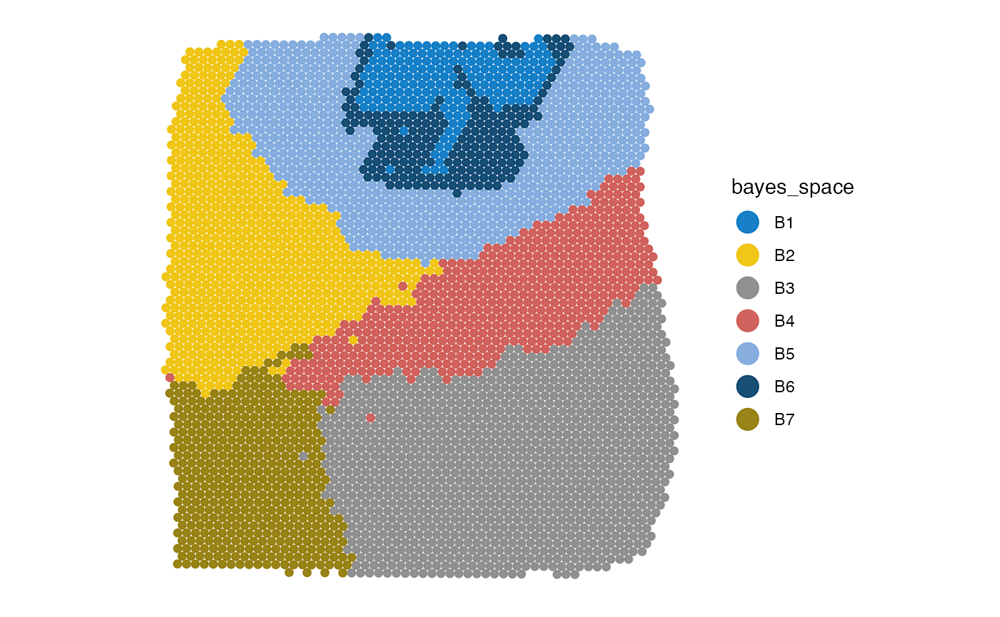
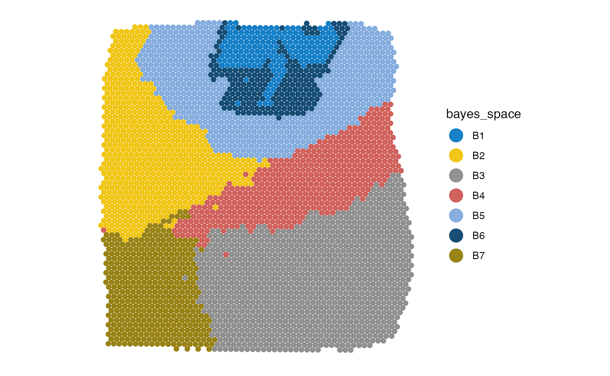
# create the annotation
object_t275 <-
createGroupAnnotations(
object = object_t275,
grouping = "bayes_space",
group = "B4",
id = "bspace4",
force1 = TRUE
)
# all spatial annotation IDs
getSpatAnnIds(object_t275)## [1] "vessel1" "vessel2" "vessel3" "img_ann_1"
## [5] "hypoxic_ann" "hypoxic_ann_nh" "bspace4"
# subset with their class
getSpatAnnIds(object_t275, class = "Numeric")## [1] "hypoxic_ann" "hypoxic_ann_nh"
# plot the outline
cluster_ann_outline <- ggpLayerSpatAnnOutline(object_t275, ids = "bspace4")
plotImage(object_t275) +
cluster_ann_outline
plotSurface(object_t275, color_by = "bayes_space", pt_clrp = "jco") +
cluster_ann_outline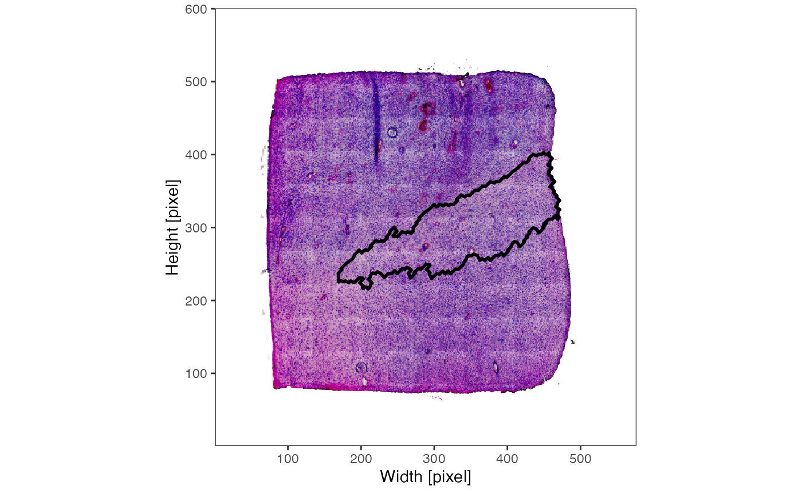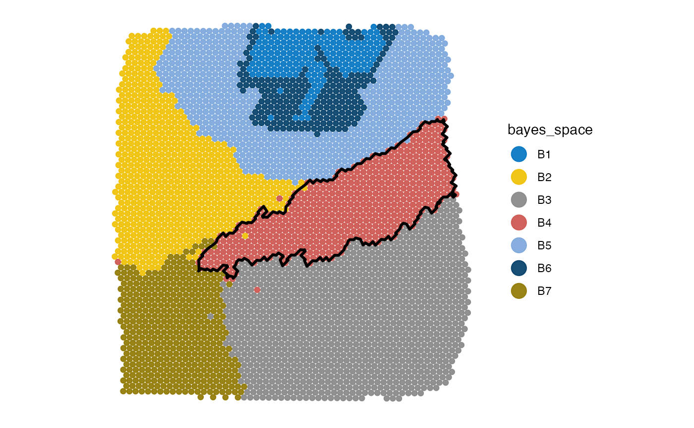